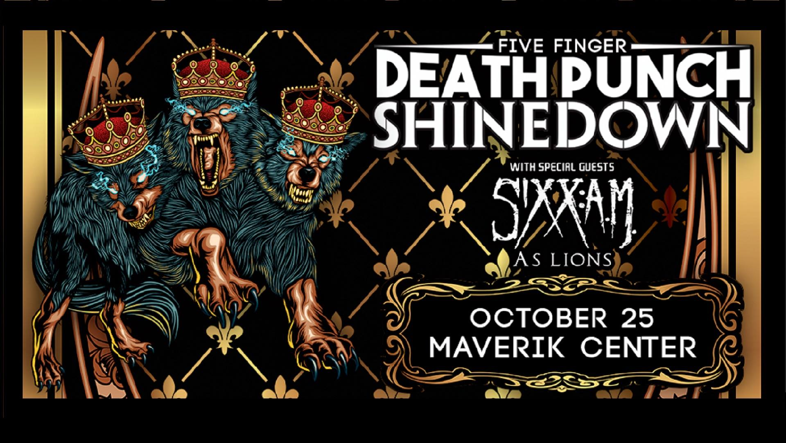

Five Finger Death Punch and Shine Down

Five Finger Death Punch and Shinedown are partnering to co-headline the biggest Fall Arena Rock Tour of 2016
an epic trek that kicks off on October 18th in Little Rock, AR, and crisscrosses North America through December. The tour is also highlighted by Special Guest SIXX:A.M. featuring vocalist/producer James Michael, bassist Nikki Sixx and guitarist Dj Ashba. UK newcomers As Lions will round out the supporting lineup, following the tour's previous openers-turned-success stories Nothing More and From Ashes To New.
Known worldwide for their unparalleled streak of hits, Shinedown is without question one of the most successful rock bands of the 21st century. The band's unmatched ascendancy over multi-format rock radio has seen the band achieve a record setting 20 #1 singles, including back-to-back chart-toppers "Cut The Cord" and "State Of My Head" off of their latest album, "THREAT TO SURVIVAL." Released last fall, "THREAT TO SURVIVAL" debuted at #1 on both Billboard's Rock Albums and Hard Rock Albums chart, and #5 overall on the Billboard 200. The band just launched the album's 3rd single "Asking For It." Shinedown exploded onto the rock scene with 2003's RIAA-certified Platinum debut album "LEAVE A WHISPER," has had every album since
"US AND THEM" (2005), "THE SOUND OF MADNESS" (2008), "AMARYLLIS" (2012) Score either Gold or Platinum success. Hailed by fans as a fiery and always exciting live act, Shinedown have toured hard throughout their career, including countless headline treks and festival appearances. The band has shared their explosive performances with a national audience through high profile television appearances on ABC's Jimmy Kimmel Live!, NBC's The Tonight Show with Jay Leno, and TODAY, CBS' The Early Show, and TBS' Conan , among others. In 2009, Shinedown received an American Music Award nomination for "Best Alternative Rock Band."
Shinedown is: Brent Smith (vocals), Barry Kerch (drums), Zach Myers (guitars), and Eric Bass (bass).